Installing the sensor onto the base frame
- Install the base frame onto the door.
- Drilling machine
- Drill: size 10 mm
- Pozidrive screwdriver for PZ1 screws
- Sandpaper
-
Drill through the 2 bases and the door using a 10-mm bit.
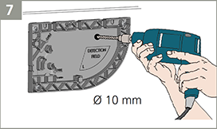 - Soften the edges using a sheet of sandpaper.
- Take the master-slave cable and pass it through the hole.
-
Position the cable in the notch of the base and make sure it is firmly fixed.
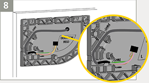 -
Remove the sensor cover.
- Put your finger in the hole as indicated in the picture.
- Pull firmly towards you in one movement.
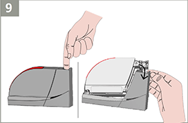 - Pass the cable through the hole on the back of the sensor.
-
Fasten the sensor on the base by sliding it downwards.
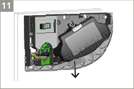 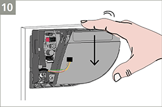 -
Connect the black plug to the black connector.
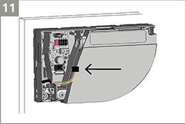 -
Safely tuck in all wires within the notch to avoid crushing them with the cover.
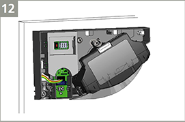 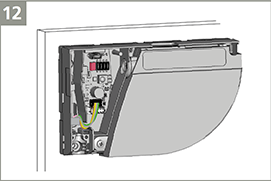 -
Close the sensor which will not be connected to the door controller using a plug.
Sensor connected to other module = SLAVE
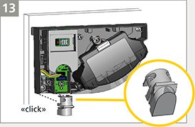 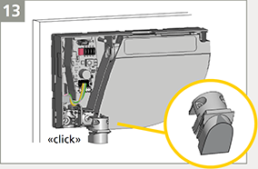 -
Fasten the lock screw firmly.
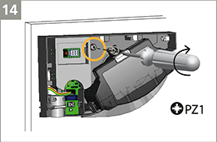 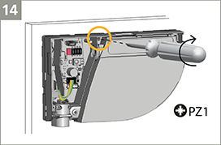